Overview
How can we help kids to form healthy habits using active technology?
HydroPal is a product that turns your water bottle into a smart water bottle. The product consists of a smart water bottle cap that replaces your existing bottle cap plus a companion app that allows you to track your hydration, engage in a build-your-own fish tank game, and interact with your peers. The product is compatible with most major brands, including Swell, Nalgene, Hydro Flask, Contigo, CamelBak, Klean Kanteen, Yeti, Thermos, SIGG, and more!
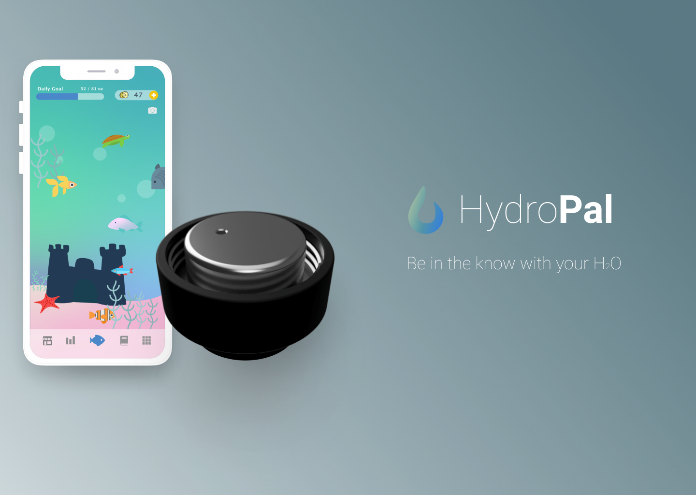Design Process
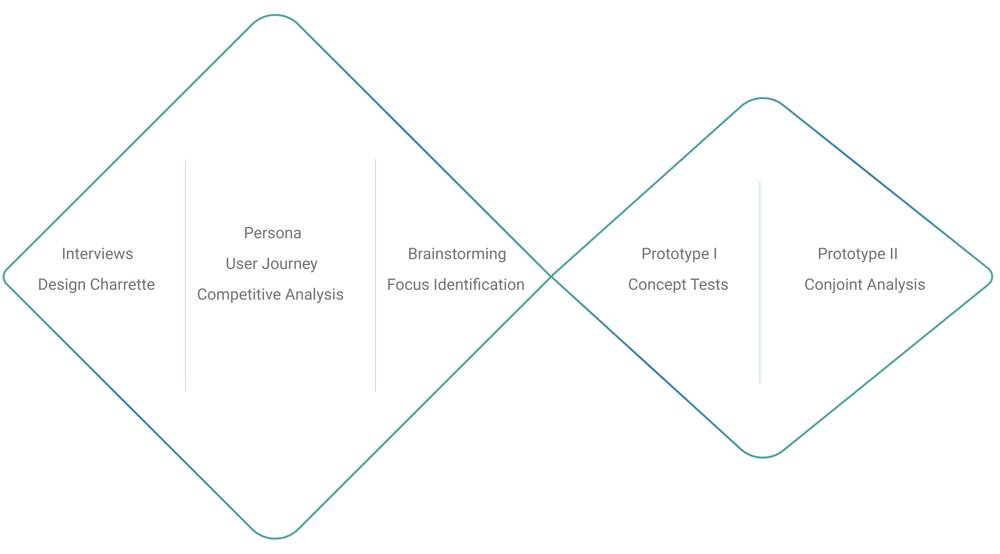Interviews
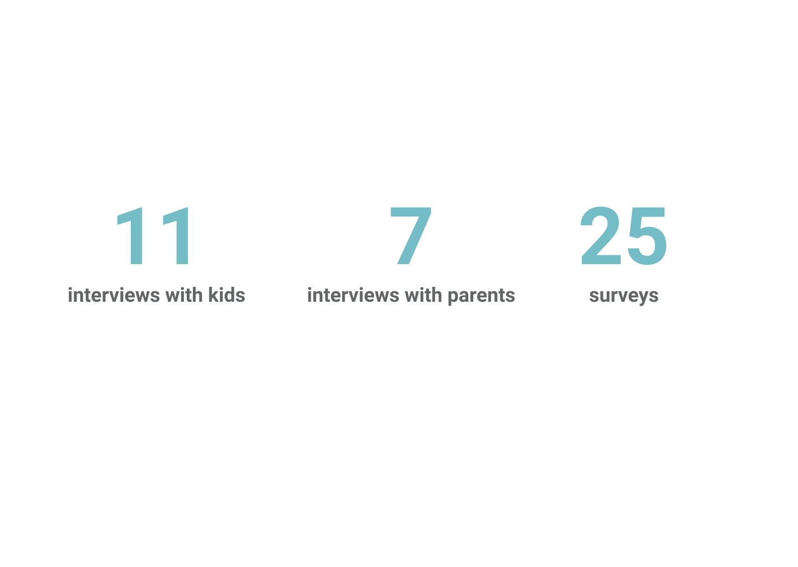
“Design and produce a product suitable for use by pre-adolescent children, incorporating the use of active technology, to improve health maintenance and outcomes.”
Given the design challenge stated above, we kicked off our project with a series of interviews and a survey to get a better understanding of user behaviour and their pain points.
Based on the insights we gained from the interviews, we conducted an affinity analysis by clustering similar findings.
It allowed us to identify three recurring pain points that have been brought up by different users - Unpleasant wake-up experience, Lack of hydration, Poor time management.
Brainstorming and Focus Identification
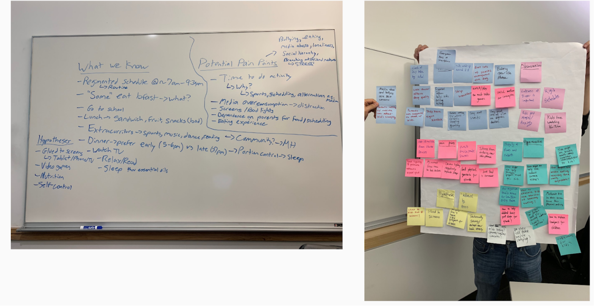 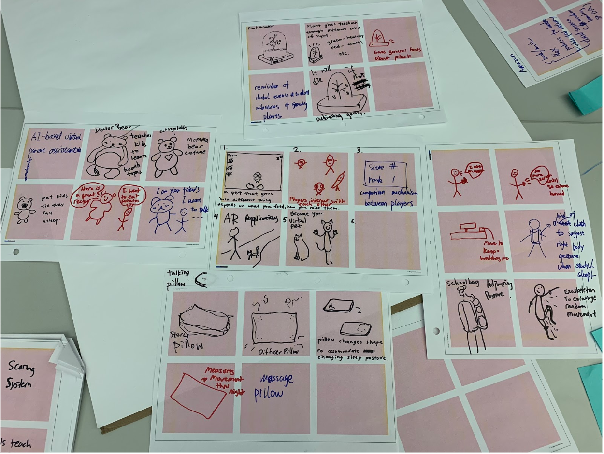
We conducted three brainstorming sessions for the pain points discovered from the last step. A list of preliminary ideas have been generated and made into 7 concept cards. In order to narrow down our design focus, we conducted second round of interviews to test the concept cards.
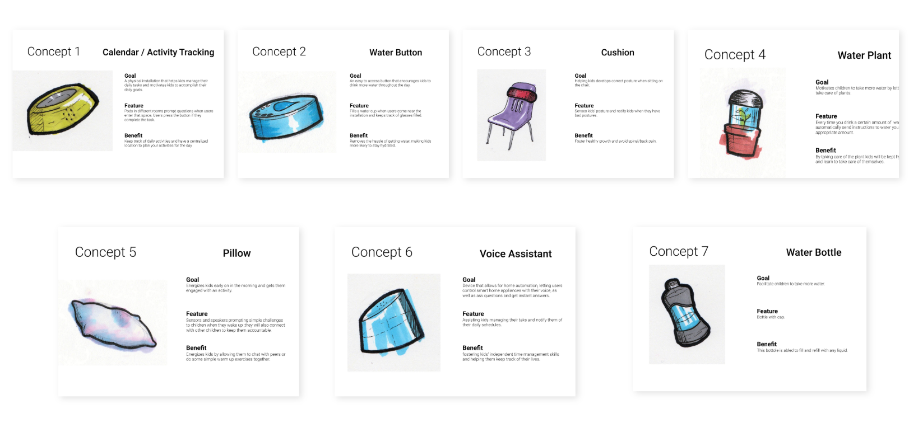
The result of the concept cards test showed that both kids and parents showed more interests about how to solve the problem of dehydration. Therefore, we decided to focus on the dehydration issue.
From the interviews, we learned that there are three main pain points/needs associated with children’s lack of water consumption, which are lacking of motivation, lacking of awareness, and desire to be informed of their daily hydration.
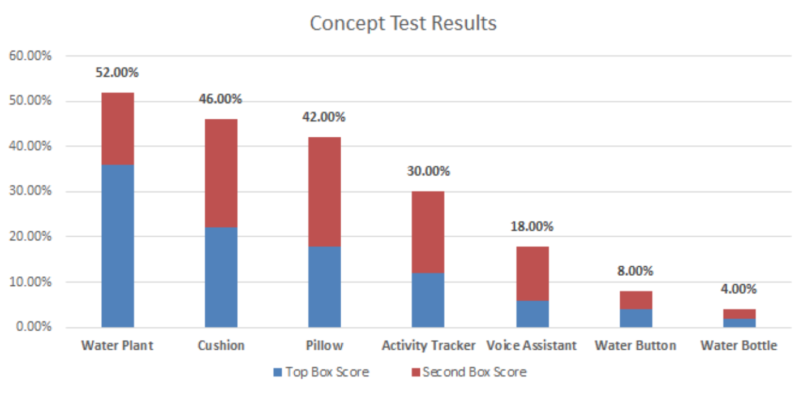
After narrowing down our focus to hydration problem, we conduct another round of secondary research.
Personas
After gaining a better understanding of our users, we created two personas based on the facts emerged from the interviews.
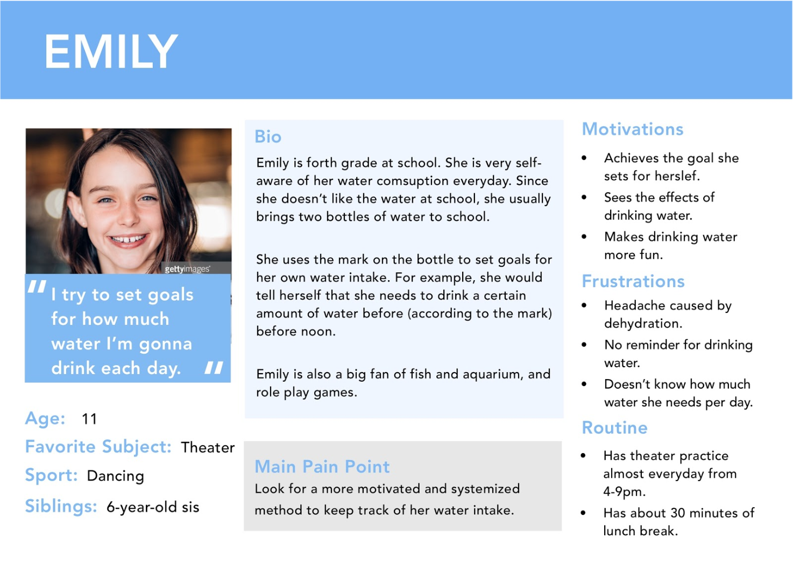 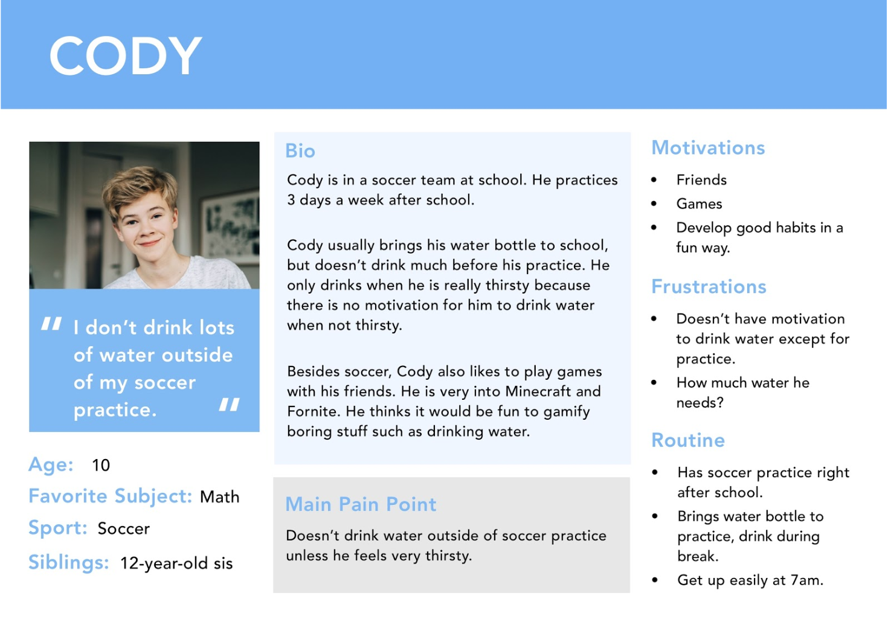Prototype Iterations
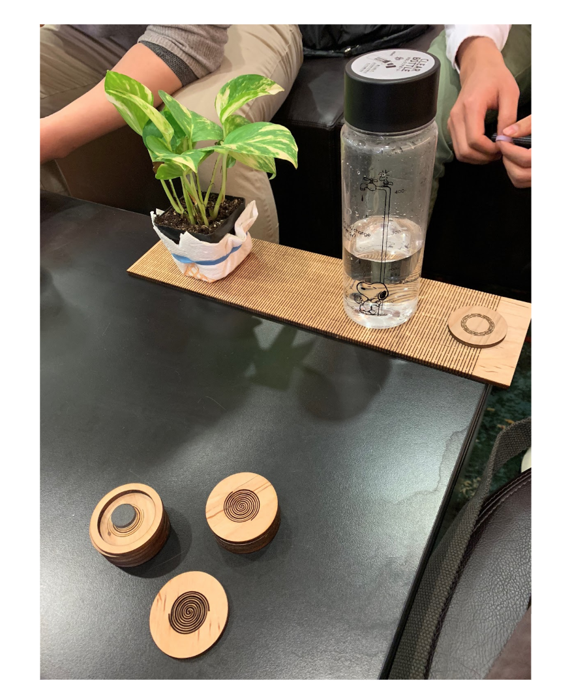
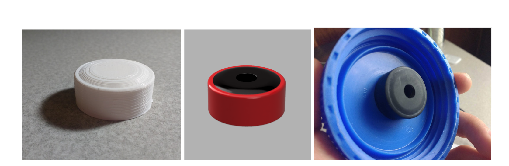
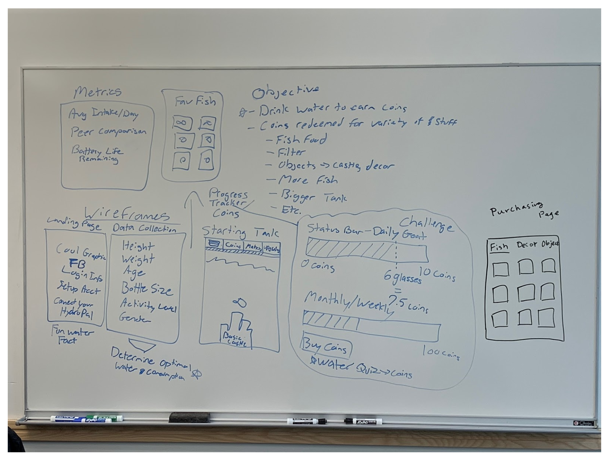
Focusing on helping kids to stay hydrated, we designed several prototypes aiming to inform and encourage kids to drink more water.
Conjoint Analysis
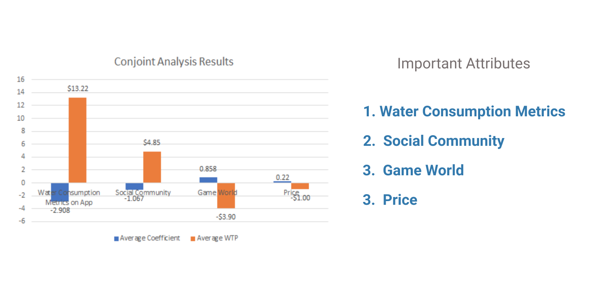
In order to evaluate which feature appeal more to users, we used conjoint analysis to assess our features. Presenting 14 cards to 30 respondents, including kids and parents, we asked them to rank the cards according to their preferences.
From the result, the most valuable feature is the water consumption metrics, then the social community feature, following by game world and low price.
Final Product
HydroPal is a smart water bottle cap with a companion mobile application that helps kids track hydration, engage in a build-your-own fish tank game, and interact with your peers.
The smart water bottle cap replaces the existing cap on your water bottle. The product is compatible with most major brands, including Swell, Nalgene, Hydro Flask, Contigo, and others
Key Feature 1 Inform Hydration Level

Key Feature 2 Gamified Experience

Key Feature 3 Customized Cap Size